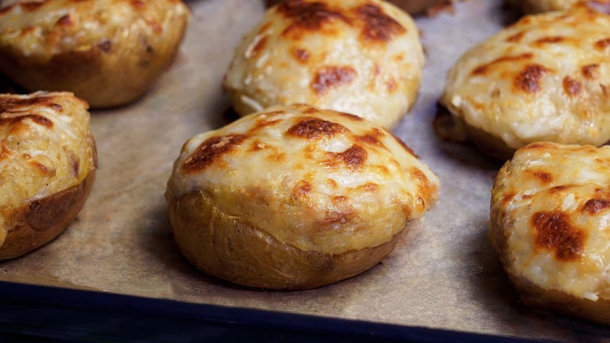

Patatas rellenas de atún.
Receta de patatas rellenas de atún

Ingredientes
- 8 patatas
- 4 latillas de atún en aceite
- 50g de mantequilla
- 100g de queso curado
- 50g de mozzarella
- 1 cucharada de nuez moscada
- sal y pimienta
Elaboración (Pasos)
- Abrimos las patatas por la mitad y las horneamos durante 1 hora
- Después, sacamos la pulpa de las patatas a un bol y la mezclamos con el resto de ingredientes.
- Añadimos el atún a la mezcla y rellenamos las pieles de las patatas con ella.
- Volvemos a meter las patatas rellenas de atún al horno, para que el queso se gratine.